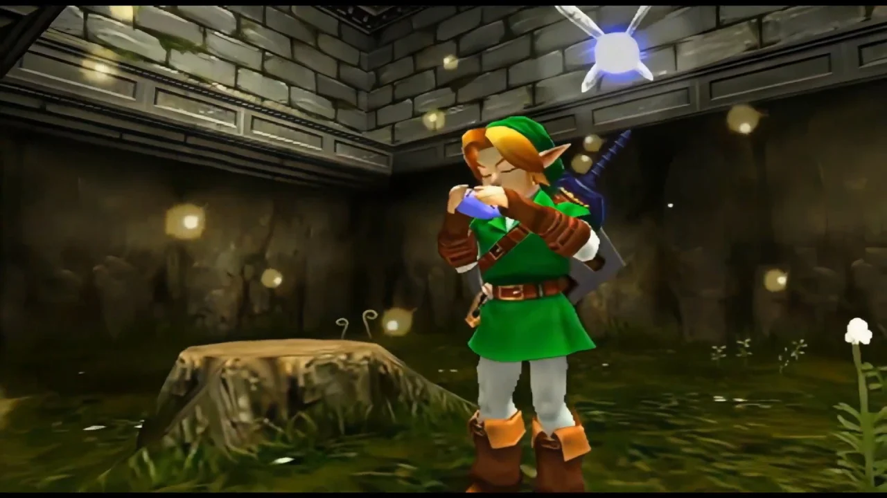

Franquia The Legend of Zelda
A franquia "The Legend of Zelda" é desenvolvida e publicada pela Nintendo.
Assim como a franquia Mario, "The Legend of Zelda" possui uma série extensa de jogos. Aqui estão alguns dos jogos mais notáveis e suas datas de lançamento:
-

- The Legend of Zelda - 1986
- The Legend of Zelda: Ocarina of Time - 1998
- The Legend of Zelda: Majora's Mask - 2000
- The Legend of Zelda: Twilight Princess - 2006
- The Legend of Zelda: Breath of the Wild - 2017
Existem muitos outros jogos e títulos relacionados à franquia.
Resumo da lore
A lore de "The Legend of Zelda" gira em torno de um herói chamado Link, que deve resgatar a Princesa Zelda e salvar o reino de Hyrule de ameaças, principalmente o vilão Ganon. A série é conhecida por suas narrativas épicas, elementos de fantasia e a lenda da Triforce, um poderoso artefato.
Resumo dos personagens principais
Link: O protagonista da série, muitas vezes chamado de "Herói do Tempo". Ele usa uma espada e é o portador da Triforce do Valor.
Princesa Zelda: A princesa de Hyrule, muitas vezes ligada a eventos místicos e detentora da Triforce da Sabedoria.
Ganon (ou Ganondorf): O principal antagonista, frequentemente associado à Triforce do Poder.
Características
Os jogos "The Legend of Zelda" são conhecidos por sua ação, exploração, quebra-cabeças e elementos de aventura. A série apresenta cenários vastos, mas não necessariamente mundos abertos, com masmorras, vilarejos e uma variedade de itens mágicos.
Adaptações
Diferentemente de Mario, "The Legend of Zelda" teve menos adaptações em filmes e séries, embora tenham sido discutidas ao longo dos anos. No entanto, a franquia tem uma série de mangás e histórias em quadrinhos baseadas nos jogos.

Curiosidades
"The Legend of Zelda" introduziu muitos conceitos inovadores nos jogos, incluindo mecânicas de quebra-cabeças e ação em mundo aberto.
A série é conhecida por sua trilha sonora icônica, criada por Koji Kondo, com a música do jogo "Zelda's Lullaby" sendo especialmente reconhecível.
O jogo "The Legend of Zelda: Breath of the Wild" foi amplamente aclamado e inovador por seu mundo aberto e abordagem não linear.